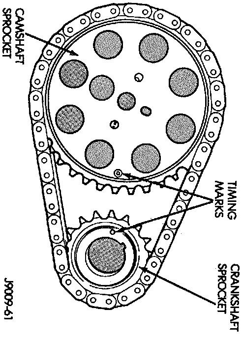
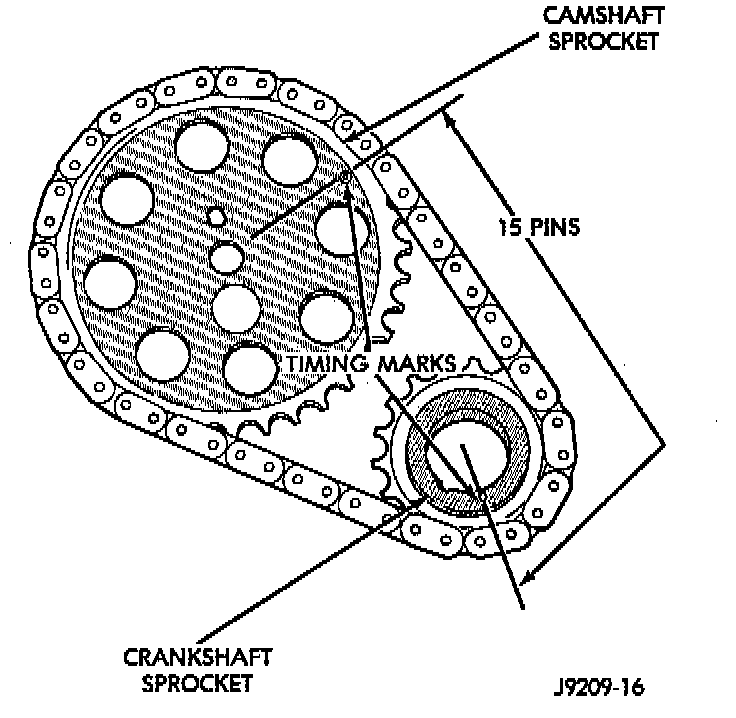
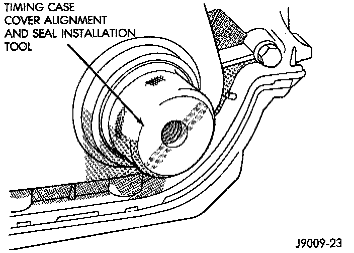

Installation
1. Clean the camshaft pin hole.2. Compress the center of the replacement spring pin with vise grips.
3. Carefully drive the pin into the camshaft pin hole until it is seated.

4. Install the camshaft sprocket, crankshaft sprocket and timing chain with the timing marks aligned.

5. To verify correct installation of the timing chain, turn the crankshaft to position the camshaft sprocket timing mark as shown. Count the number of chain pins between the timing marks of both sprockets. There must be 15 pins.
6. Install the crankshaft oil slinger.
7. Tighten the camshaft sprocket preload bolt to 108 Nm (80 ft. lbs.) torque.
8. Check the valve timing.
9. Lubricate the tension spring, the thrust pin and the pin bore in the preload bolt with Mopar Engine Oil Supplement, or equivalent. Install the spring and thrust pin in the preload bolt head.
10. Coat both sides of the replacement timing case cover gasket with gasket sealer. Apply a 3 mm (1/8 inch) bead of Mopar Silicone Rubber Adhesive Sealant, or equivalent to the joint formed at the oil pan and cylinder block.
11. Position the timing case cover on the oil pan gasket and the cylinder block.

12. Place Timing Case Cover Alignment and Seal Installation Tool 6139, or equivalent in the crankshaft opening in the cover.
13. Install the timing case cover-to-cylinder block bolts. Install the oil pan-to-timing case cover bolts.
14. Tighten the 1/4 inch cover-to-block bolts to 7 Nm (60 inch lbs.) torque. Tighten the 5/16 inch front cover-to-block bolts to 22 Nm (192 inch lbs.) torque. Tighten the oil pan-to-cover- 1/4 inch bolts to 14 Nm (120 inch lbs.) torque. Tighten the oil pan-to-cover 5/16 inch bolts to 18 Nm (156 inch lbs.) torque.
15. Remove the cover alignment tool and install a replacement oil seal into the cover.
16. Install the vibration damper on the crankshaft.
17. Lubricate and tighten the damper bolt to 108 Nm (80 ft. lbs.) torque.
18. If equipped with air conditioning:
a. Install the A/C compressor serpentine drive belt idler pulley.
b. Install the generator.
c. Install the A/C condenser and receiver/drier assembly.
19. Install the serpentine drive belt on the pulleys and tighten.
20. Install the radiator. Connect the radiator hoses and automatic transmission fluid cooler pipes, if equipped. Fill the cooling system.
21. Install the fan and shroud.
22. Connect negative cable to battery.